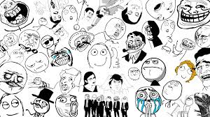
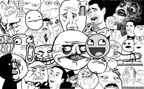
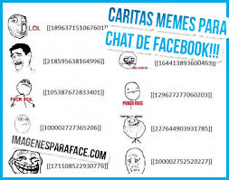
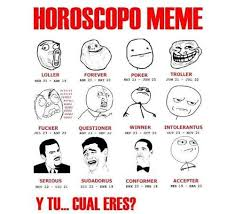

MEME

Un meme (o mem) es, en las teorías sobre la difusión cultural, la unidad teórica de información cultural1 transmisible de un individuo a otro, o de una mente a otra, o de una generación a la siguiente. Es un neologismo acuñado por Richard Dawkins en El gen egoísta (The Selfish Gene), por la semejanza fonética con «gene» —gen en idioma inglés— y para señalar la similitud con «memoria» y «mimesis».
E-mail
Facebook
Los memes del mundo& amigos
Buscan Memes


¡LOS MEMES EXISTEN!
Según Dawkins, poseemos dos tipos de procesadores informativos distintos:
El genoma o sistema genético situados en los cromosomas de cada individuo y determinante del genotipo. Este ADN constituye la naturaleza biológica vital en general y humana en particular. Mediante la replicación, los genes se transmiten hereditariamente durante generaciones.
El cerebro y el sistema nervioso permiten procesar la información cultural recibida por enseñanza, imitación (mímesis) o asimilación, divisible en idea, concepto, técnica, habilidad, costumbre, etc., y nominados "memes" con cierta ambigüedad.
La tesis más importante de Dawkins es que los rasgos culturales, o memes, también se replican. Por analogía con la agrupación genética en los cromosomas, se considera que los memes también se agrupan en dimensiones culturales, incrementables con nuevas adquisiciones culturales. La gran diferencia es que, mientras los cromosomas son unidades naturales independientes de nuestras acciones, las dimensiones culturales son nuestras construcciones. Así, la cultura no es tanto un conjunto de formas conductuales, sino más bien información que las especifica.

La teoría de los memes está siendo desarrollada por varios investigadores, que la unen a las tesis de Lumsden y Wilson o que las vinculan con los estudios de Luigi Luca Cavalli-Sforza. Además del mismo Dawkins, F. T. Cloak, J. M. Cullen, E. Moritz, A. Lynch y algunos otros autores, son los representantes de esta concepción de la transmisión y evolución cultural.
Como explicación de la evolución de la cultura, todavía aparece como una pre-teoría en fase de acumulación de datos y de elaboración de un aparato matemático suficiente. Los estudios de Cavalli-Sforza y Marc Feldman proporcionan una buena base de partida para el estudio cuantitativo de la transmisión y evolución cultural, aunque estos autores no defienden exactamente la teoría principal de los memes de Dawkins. En cualquier caso estos estudios iniciados desde la perspectiva de la genética, la sociobiología y la etología son la primera aproximación no meramente cualitativa al proceso de la transmisión y evolución cultural, y pretenden ampararse en la tradición científica del evolucionismo.
Pero mientras los procesos evolutivos biológicos se rigen siempre por el modelo darwiniano, la evolución de la cultura, con intervención humana directa, parece seguir a veces un modelo de tipo lamarckiano de transmisión de caracteres adquiridos, lo que permite una evolución rapidísima —potenciada por la velocidad casi instantánea de los medios de comunicación— comparada con los procesos darwinianos. En cualquier caso, la constitución genética humana está determinada por unos 3.000 millones de nucleótidos procedentes del ADN materno y otros tantos procedentes del ADN paterno. Pero las neuronas del sistema nervioso son 100 veces más numerosas y las conexiones entre ellas todavía muchísimo más. De ahí que intentar la creación de un modelo matemático que permita entender la evolución cultural, sea todavía una empresa muy difícil que, no obstante, empieza a ser acometida por los autores mencionados y por los teóricos de la inteligencia artificial.
Filósofos como Daniel Dennett, Donald Davidson y Jesús Mosterín han contribuido a desarrollar una teoría de la cultura que saca partido a la noción de meme. En particular, y según Mosterín, la cultura actual de un individuo en un momento determinado sería el conjunto de los memes presentes en el cerebro de ese individuo en ese momento.2 A su vez, la noción vaga de cultura de un grupo social es analizada por el mismo autor en varias nociones precisas distintas, definidas todas ellas en función de los memes presentes en los cerebros de los miembros del grupo.
Un meme es una idea que puede evolucionar y que es tremendamente viral y propagable. Sí amigos, un meme no es sólo un muñecote, si no que un meme puede ser un vídeo, una foto, un collage, etc. En cuantocabron recogemos los memes que son viñetas y advice animals.
- Un meme normalmente no se crea, si no que surge. Muchos de los memes han surgido a partir de mutaciones de otros memes o a partir de cosas que nunca pensaríamos que pudieran convertirse en un meme, como un vídeo o un cuadro.
- Los memes son una de las riquezas de Internet y se propagan brutalmente entre todos los usuarios. Es importante siempre mantener su origen y de dónde se han sacado, para mantener un punto de perspectiva. Muchos de los memes tienen su origen en la comunidad 4chan, pero hay que tener en cuenta que en cualquier comunidad de internet puede salir un meme en cualquier momento, eso sí, no hay que forzarlos. Por eso, en cuantocabron intentamos ser estrictos con la fuente original del meme.

PARA QUE SIRVEN LOS MEMES
Para el conjunto de los memes se dan las características propias de todo proceso evolutivo: fecundidad (algunas ideas son especialmente efectivas), longevidad (persisten durante mucho tiempo) y fidelidad en la replicación (conservadurismo tradicional, especialmente el enseñado como parte de la educación infantil).
A su vez, los memes se dan en un amplio campo de variación, se replican a sí mismos por mecanismos de imitación y transmisión de cerebro a cerebro y engendran un amplio abanico de copias que subsisten en diversos medios. Con ello tenemos el marco general de un proceso evolutivo que Dawkins compara con la evolución biológica, e incluso llega a aceptar que los memes deben ser considerados como estructuras vivientes no sólo metafóricamente, sino técnicamente. Los memes alternativos, que pueden servir para efectuar la misma función, son llamados alelomemes o memes homólogos. A su vez, los memes pueden agruparse formando macromemes, que constituyen un sistema de muchos memes estructurados e interrelacionados que forman un objeto cultural complejo, tal como una lengua, una teoría, una mitología, etc. En general, la mayor parte de las construcciones teóricas que sustentan la teoría de la evolución de las especies, son aplicadas por los defensores de las tesis de Dawkins a la teoría de los memes.
De la misma manera que los genes se autorreplican porque sí (ergo, inconscientemente), los memes tienden a replicarse igualmente; las buenas ideas no lo son propiamente si son incapaces, a la vez, de replicarse bien. Así, los memes son indiferentes a la verdad, como los genes son ajenos a cualquier clasificación. Este mecanismo de autorreplicación no es exclusivo de sistemas vivos, como el ADN y el ARN: ciertos polímeros y cristales, y los virus informáticos muestran este comportamiento, por lo cual no debería resultar ilógico en algo inerte como un meme, ya que como vemos se trata de un patrón visible en muchos elementos naturales. Los genes de un ser vivo, conforme pasan las generaciones, alcanzan proporciones insignificantes en sus descendientes. De este modo el equipo o colección de genes de un individuo tiende a desaparecer. Sin embargo una buena idea o un invento puede perdurar casi intacta durante siglos y siglos. Los memes y los genes a menudo se refuerzan los unos a los otros pero esto no siempre es así; por ejemplo un gen para el celibato sería erradicado rápidamente del acervo génico pues estaría condenado al fracaso, en cambio un meme para el celibato puede tener mucho éxito en el acervo de memes. El medio de transmisión es la influencia humana de diversa índole, palabra escrita, hablada, el ejemplo personal, entre otros.